前言
Long long time ago，在未接觸爬山時就有傳聞發生最多山難的黑色奇萊傳說，尤其是靈異相關話題的電視節目，因此第一次要走奇萊連峰時就有點擔心，還差點取消行程，但慢慢的接觸百岳後，加上解鎖了四大障礙之一的“奇萊東稜”，以及後續接觸的百岳單攻越野“奇萊主山/北峰”，前前後後算一算親近“奇萊北峰”的次數總共有六次，而今天要分享的路線就去了三次，因為風景美，外加不是逛菜市場行程，因此篩選了大部份的觀光客前往，想要遠離人群就得花些體力。
第一天規劃建議
這行程基本規劃是三天，看要直接衝到驚嘆號營地，還是只到月型池營地，而第一天揹最重，在成功山屋之前的行程只要準備自己夠喝的行動水，然後接著要揹水過“奇萊北峰”直到營地，尤其是補完水再扛上肩往上爬時，從約2800公尺要上到3607公尺山頂真的會累到喘吁吁，如果要輕鬆點，多一天可以住成功山屋或稜線山屋/營地，但平日/假日這些地方的申請都很搶手，因此直接靠體力比較實在，翻過了稜線上草原後，整個心情會超開心，會被眼前的視野美景所吸引，一切都值了…
休息過後接著走下去，如果沒來過會被遠方的那座驚呆，第一時間會罵出來，X@#$...怎這樣抖，重點是還要先下後上，一般走完第一次都會說以後再也不來了，但通常只是說說而已…哈哈…行程中最經典就在上北峰這段，有繩子可以拉，間接就可以知道有多抖了，而這段路程最大的風險在於天氣，正往風口前進，高山低溫加上風寒效應對人體感溫度會快速下降，行程的美好記憶，很多都是取決於天氣預報，第一次2019年二月(228連假); 第二次2019年十月(雙十連假); 第三次2020年五月(勞動節)而這三次行程都是好天氣，重點第二天行程會有比人還高的箭竹要鑽，天氣不好還是別折騰自己。
另一個關鍵因素就是決定在哪扎營的問題? 第一次去原本想按照 “奇萊東稜”到磐石中峰下營地扎營，但不太划算，因為是回來行程變爬坡，因此選擇在“驚嘆號營地”， 但之後覺得回程還要重裝扛上坡，所以第二次第三次就都扎營月形池，然後輕裝來回 “甜甜圈”
優點如下:
- 第一天最硬，重裝距離時間相對少，隔天輕裝，所以相對輕鬆
月形池營地:6小時34分
驚嘆號營地:8小時37分
- “月形池”水源比
“驚嘆號池”穩定
- 有水鹿可看
缺點如下:
- 現有營地大約搭三頂帳，可扎營區域比較少
- 扎營區域小但地型開闊，晚上風大，扎營外帳要拉緊
- 如果不想喝水鹿玩過的池水，隔天就得扛較遠的水回營地
| 大草原繞過後就可看到奇萊北峰 |
| 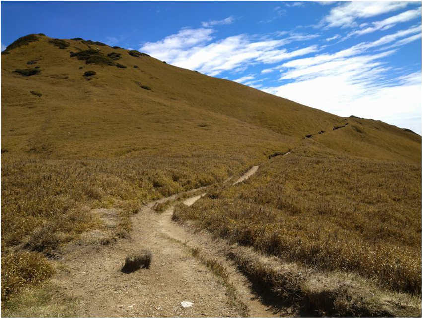 |
| 從合歡山公路看過去， 因為早上背陽面的陰暗所以稱為黑色奇萊 - 奇萊北峰 |
| 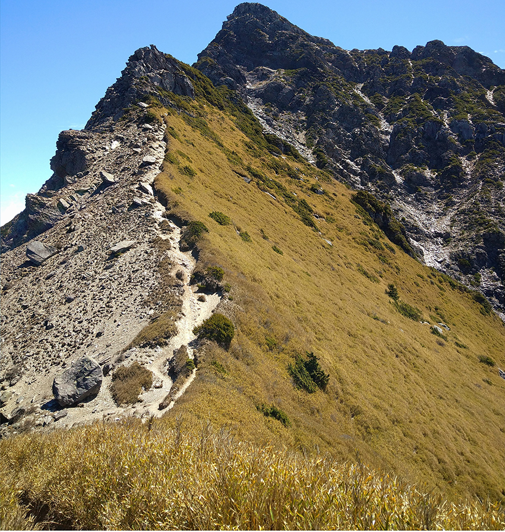 |
| 登頂後回首來時路 |
| 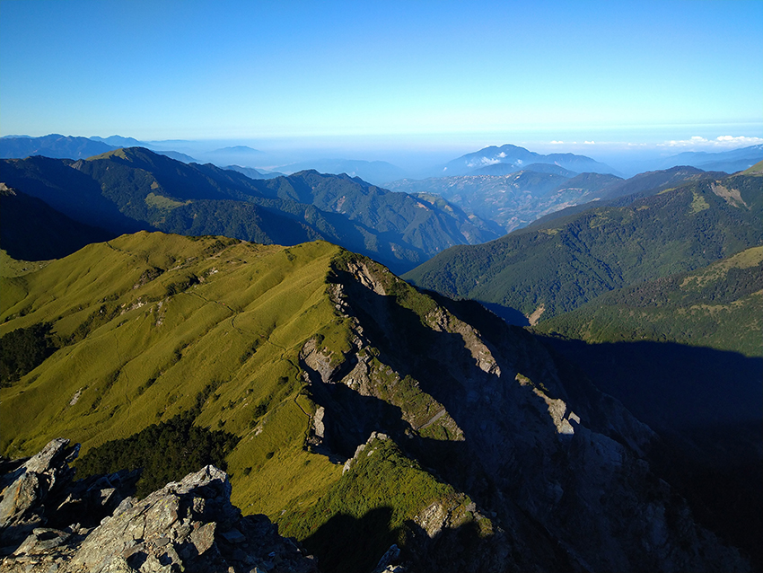 |
| 月形池-水位未滿時 |
| 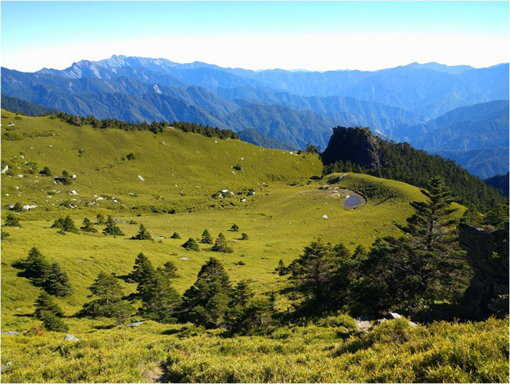 |
| 山友準備離開， 剛好接收營地 |
| 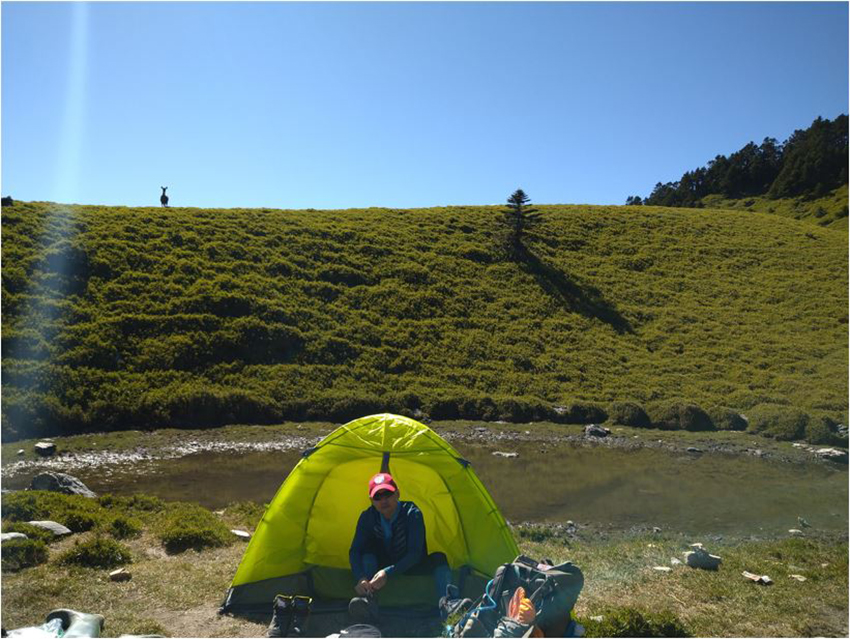 |
| 天氣好晚上是個不錯的賞星星好地方 |
| 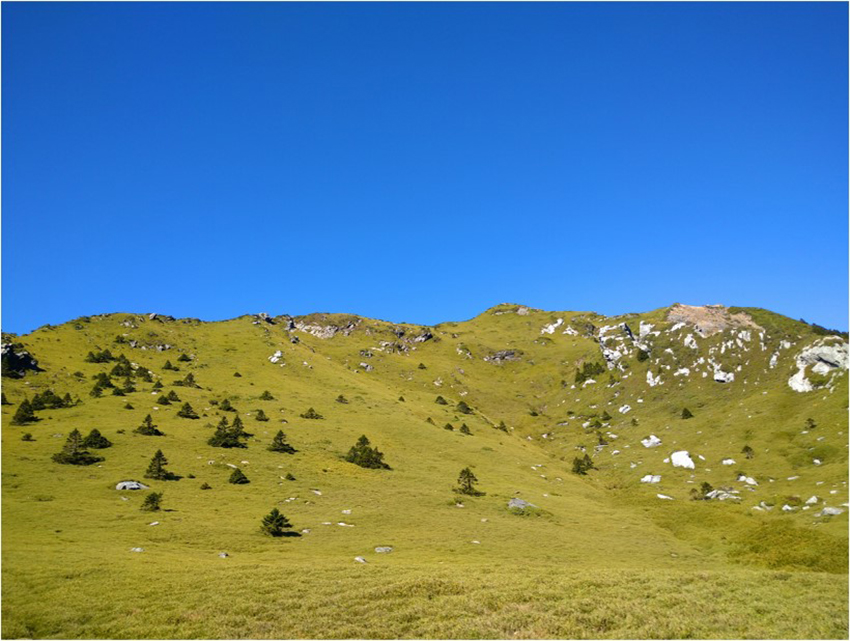 |
從海拔3600公尺下到3340公尺，但因為緯度高一但太陽下山，溫度就特別冷，但此地方剛好有池水，晚上水鹿會出沒，會到池邊玩水，不管是食物或垃圾都要收好，避免被亂咬，晚上水鹿大約十多隻出沒，尤其上廁所時，都有很多雙眼睛看著…
| 太陽下山時倒影 |
| 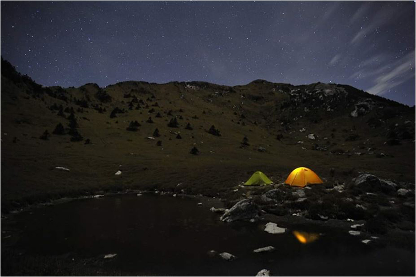 |
| 月形池-滿天星星 |
| 尿尿完水鹿迫不急待的衝過來 |
| 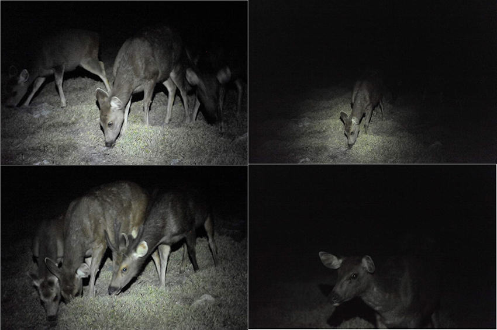 |
第二天規劃建議
位處於高山營地，早上起床超冷，通常會等太陽出來溫暖身子，所以六，七點出發差不多，今天是行程的重點，因為前往“甜甜圈谷”，然後下“巴托蘭溪神秘湖”而此行程因為非傳統路線，比較少人走，所以要會看軌跡朝目標方向前進，沿途會經過 “驚嘆號營地”，“青蛙石”，“磐石中峰下營地”此營地水鹿更多，之前走“奇萊東稜”第一天的札營地點， 然後會到叉路左往磐石山，右往水鹿大操場，再經過小操場，此時手機就要拿出來對軌跡找路，因為接下來切入樹林，並經過比人高的“魚尾狀谷地”箭竹林，最後鑽到溪底，如果不想喝池水，可以攜帶水袋回程裝活水，而天氣熱時也剛好可以泡腳，溪底小段路可看到青翠顏色飽滿的苔蘚蠻漂亮的一段路，然後到溪底大轉折處不遠的缺口往左上切，此地之所以被稱為 “甜甜圈”之原因在於，中間有隆起小山丘“甜甜圏山”，而環狀圍繞一圈的草原之所以得名，可以O型跑一圈然後上小山丘樹蔭下休息。
沿著圈谷跑的時候會看到一大石頭，剛好是往神秘湖的方向(左上切)，然後就開始展開對軌跡，辨別路徑以及確認布條，正常沒走錯路約30~40分可到 “巴托蘭溪神秘湖”回程因為上坡，所以捉1小時，大約10點左右到達，湖的周圍有大量的倒木，穿雨鞋剛好可以踩深一點站上倒木拍倒影，配上藍天倒影，外加倒木陰暗面，真的有點神秘感，此行獨攀行程，繞完湖後就返回甜甜圈谷，天氣正熱剛好在上切點的樹蔭下休息補給，然後開始返回到水鹿大操場，來時下坡，回程當然要爬回到傳統路徑上，最終要回到磐石西峰3335公尺(有訊號)，而再下來一點點就是“驚嘆號營地”3325公尺(無訊號)，因輕裝回“月形池”也要大約1小時20分…因此選扎營“月形池”能平衡第二天的時間。
到民宿晚上10點多，凌晨3:30的接駁車，所以大伙秒睡入眠，而我還在慢慢洗澡，順便減重上完廁所才去睡，之前單攻百岳有被訓練到不睡覺，所以有得睡就很滿足了，搭接駁也可以小補眠一下，跟計劃差不多凌晨5點到8K大坍方處下車，行前有心理建設，認知只要撐過今天，接下幾天就可以輕鬆釣鱒魚到農場HAPPY，因此感覺隊友特別有衝勁眼睛和頭燈都跟著亮了起來，只是太認真發亮，反而沒看不到亮點，那就是每年慕名去加里山參訪的植物，還好榮哥跟甘姐眼睛比頭燈還亮，留下一些[一葉蘭]照片讓我們有眼福，努力踢了四個半小時林道，隊友都不會累中途沒在休息的，來到[9+1粒溪]，這裡是今天唯一活水源，使用濾水器努力喝飽喝足裝入肚裡就不用揹水，但還是不怕重的隊友，硬生生裝了好幾升活水入袋，自知能力有限只把2個500cc水瓶裝滿，休息不到5分鐘大伙又想運動了，繼續後面行程，等等會經過一座百岳干卓萬山3284公尺，中途會有破碎地型，也就是干卓萬斷崖，外加順撿一座269岳干卓萬山三叉峰3241公尺，到三叉營地，但紮營地需再往前到達牧山池，回想起2017年第一次爬干卓萬群峰，第一天也才到乳型峰東鞍營地，紮營後，暫時相信隊友出發前說的…第一天最累。。。
| 不同時期季節的“驚嘆號” |
| 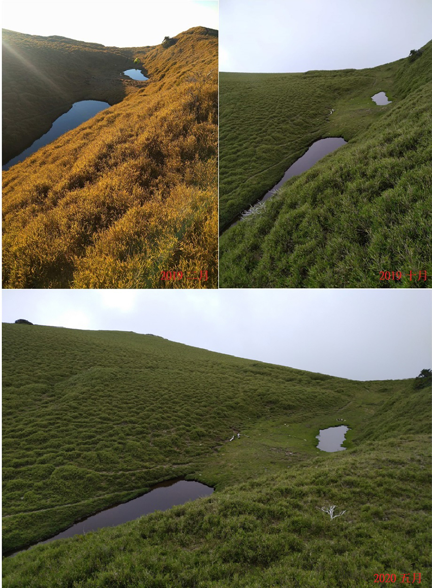 |
| 青蛙石 |
| 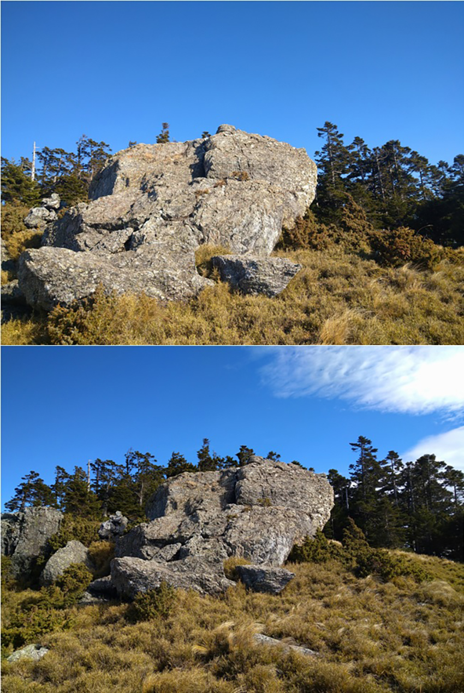 |
| 磐石中峰下營地>> 水鹿大/小操場>>魚尾狀谷地 |
| 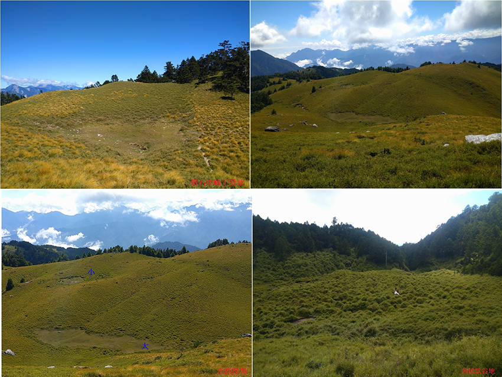 |
| 朝樹林缺口前進 |
| 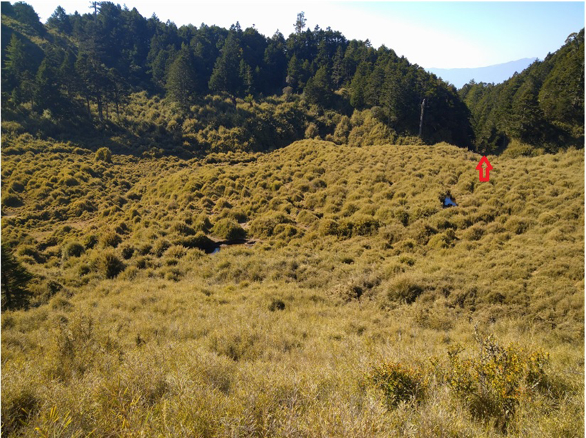 |
| 溪底泡腳放鬆… |
| 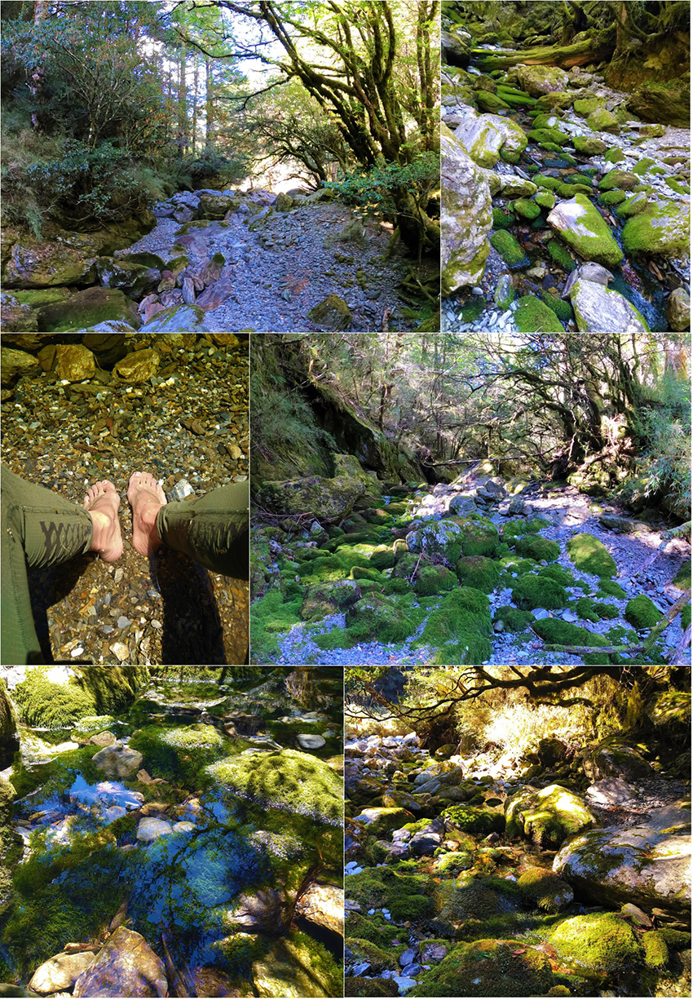 |
| 甜甜圈谷 |
| 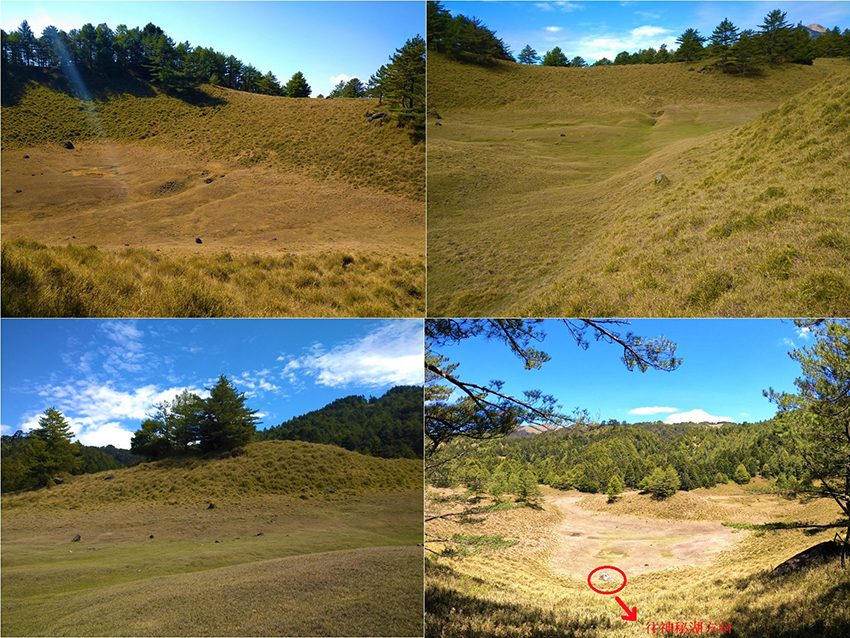 |
| 巴托蘭溪神秘湖 |
| 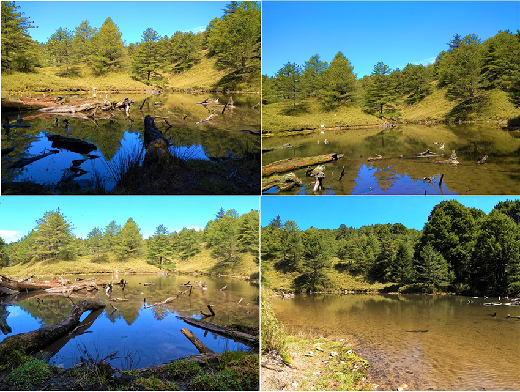 |
回到營地大約下午3點，分段把食物煮一煮，先來個下午茶食物，第二天的時間很充裕，個人是返回營地才吃正餐，外出時都以行動糧替代，因此彈性更大，可以四處搜尋寶物，增加探勘範圍，太陽還沒下山時都還溫暖，所以往營地高處去欣賞美景看夕陽，然後就是再躲進帳篷煮晚餐…
| 今日伙食 |
| 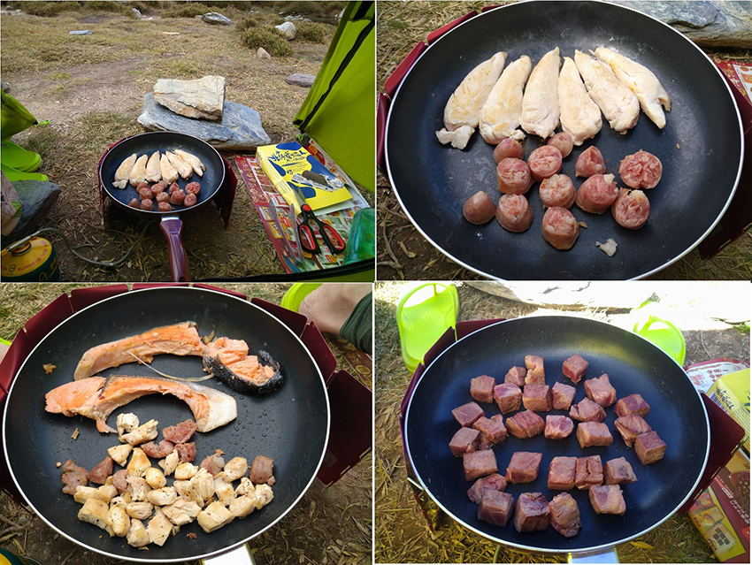 |
| 吃飽四處晃晃 |
 |
第三天返回
撿到寶不容易，更要有體力扛回來，以及後續打包工作，回程要爬升800公尺回到 “奇萊北峰”，接著下降約900公尺到黑水塘山屋，才又爬升約450公尺回到松雪樓，路程漫長應早早出發…
| 早起看水鹿，看完打包 |
| 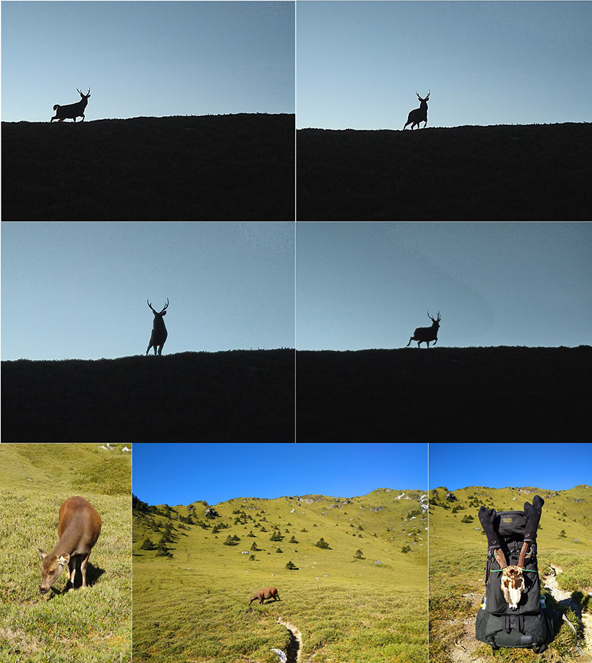 |
| 回程美景 |
| 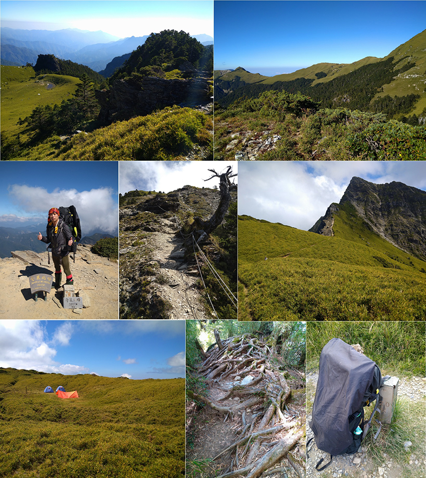 |
行程後心得分享
這條路線是根據“奇萊東稜”的傳統路線，然而叉出去接“甜甜圈谷”走探勘路線，戶外活動往往都是伴隨著一定風險，體力及找路技能都要有一定水準，以及行前掌握天氣預報，才能安全的享受此行程，天數拉長可克服體力上的不足，手機軌跡可輔助減少走錯路的工具，但最重要的是天氣，冬天太冷因為營地海拔高，天氣不好更不建議，走下去會搞的全身濕又沒景，所以天氣一定要晴.
三次行程記錄
2019/02/28 ~ 0302 “驚嘆號營地”“甜甜圈谷”
D1 – 重裝 (8小時37分)
07:00 奇萊登山口>>08:14 黑水塘山屋>> 9:05 成功山屋>> 10:03 成功山屋/稜線山屋/奇萊北峰叉路>> 11:31 奇萊北峰三叉路口>> 12:40 奇萊北峰>> 13:55 月型池>> 14:15 奇萊東稜(004)>> 15:37 驚嘆號水池營地 (宿)
D2 – 輕裝 (5小時32分)
07:40 驚嘆號水池營地>> 07:55黑水塘>> 08:06青蛙石>> 08:21磐石山中峰營地>> 08:42 水鹿大操場>> 08:54水鹿小操場>> 09:20 下切到溪谷>> 10:00 溪谷上切處>> 10:05甜甜圈谷>> 10:16繞甜甜圈谷， 上甜甜圈山>> 10:24回溪谷並疊石標記甜甜圈谷上切處>> 11:29返回水鹿大操場>> 12:01亂切後從磐石山中峰下活水處上切至磐石山中峰>> 12:41回黑水塘>> 13:12返回驚嘆號水池營地 (宿)
D3 – 重裝 (8小時20分)
07:50 驚嘆號水池營地>> 09:11 月型池>> 10:33奇萊北峰>> 11:18下山 (停留45分)>> 11:50 奇萊北峰三叉路口>> 12:21成功山屋/稜線山屋/奇萊北峰叉路>> 13:01成功山屋>> 13:44黑水塘山屋>> 14:30 木樁3K處>> 15:10 木樁2K處>> 15:49 木樁1K處>> 16:10奇萊登山口
-----------------------------------------------------------------------------------------------------------------------------------------------
2019/10/10 ~ 10/12 “稜線山屋” “月形池”
D1-2019/10/10 （登山口到稜線山屋重裝4小時55分/奇萊主輕裝3小時4分，總行程時間:7小時59分）
6:16奇萊登山口>> 6：39 木樁1K處>> 7：09木樁2K處
>> 7：33木樁3K處>> 7：45黑水塘山屋
>> 7：59木樁4K處>> 8：20成功山屋（8：50離開）⋯⋯
>> 9：07木樁5K處>> 9：32稜線1.3K/成功0.5K山屋牌
>> 10：06奇萊北峰1.5K/成功山屋0.9K;稜線山屋1K牌
>> 10：27木樁6K處>> 11:11抵達稜線山屋（木樁6.6K）
>> 11：45出發奇萊主峰>> 12：14抵達主峰卡樓羅叉路
>> 12：43 奇萊主峰>> 13：04下山返回叉路
>> 14：40回奇萊北峰1.5K/稜線山屋0.2K卸重裝處
>> 14：49宿稜線山屋
>> 15：07抵達取活水（3L）>> 15：29返回山屋
D2-2019/10/11 (重裝3小時26分，輕裝7小時32分)
5:00起床>> 5:24出發
>> 6:15抵達三叉路口奇萊北峰1.2K/稜線山屋0.6K（往主峰走錯500m）
>> 7:06奇萊北峰>> 8:00往東稜路線>> 8:50月形池
>> 9:56休息聊天認識新山友等好營位並扎營後出發⋯⋯
>> 10:11黃牌奇萊東稜004>> 10:52驚嘆號營地
>> 11:05盤石西峰>> 11:16盤石西峰黑水塘
>> 11:29青蛙石>> 11:40盤石中峰營地
>> 11:56水鹿大操場>> 12:03水鹿小操場
>> 12:27魚尾谷>> 12:29魚尾谷溪邊出口
>> 12:49抵達溪流>> 12:53發現目標
>> 13:09考量時間返回（負重水1.5L+戰力品1.72KG)
>> 13:59水鹿小操場 >> 14:03水鹿大操場
>> 14:44盤石中峰營地>> 15:58盤石西峰
>> 16:09驚嘆號營地>> 17:28月形池 (宿)
D3-2019/10/12 (重裝，時間：7小時46分)
5:56起床>> 8:19月形池出發返回>> 9:51奇萊北峰
>> 10:48三叉路口離成功山屋1.1K
>> 11:50 木樁5K>> 12:23 成功山屋(休息補水)
>> 12:31離開山屋>> 13:10木樁4K⋯⋯
>> 13:23 黑水塘山屋（大休跟山友聊天）
>> 13:52 再出發>>14：23木樁3K>> 14：58木樁2K
>> 15：41木樁1K>>16：05奇萊山登山口
-----------------------------------------------------------------------------------------------------------------------------------------------
2020/05/01～0503 “月形池”“甜甜圈谷”，“巴托蘭溪神秘湖”
D1：6小時34分
05:27奇萊登山口>>06:49黑水塘山屋>>07:47成功山屋>>10:00北峰/稜線山屋叉路口>>11:00奇萊北峰(3607M)>>12:01月形池（宿）
D2: 8小時50分
06:20出發>>07:12驚嘆號營地>>7:27盤石西峰（3335M)>>07:51青蛙石>>08:08盤石中峰下營地>>08:30水鹿大操場>>09:00下切到溪谷>>09:36甜甜圈谷>>10:05巴托蘭溪神秘湖>>10:58回甜甜圈谷>>11:12回溪谷>>12:24回水鹿小操場>>13:15青蛙石>>13:53磐石西峰>>13:57驚嘆號營地>>15:10月形池（宿）
D3: 5小時 35分
06:22出發>>07:47奇萊北峰>>08:15北峰/成功山屋叉路口>>09:21成功山屋>>10:12黑水塘山屋>>11:57奇萊登山口（End）